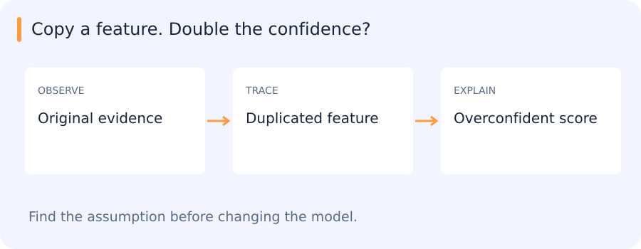

Copy a feature. Double the confidence?
A Naive Bayes model sees “large vehicle” and an exact duplicate of that feature. It may count the same evidence twice.

| Notice | Interpret | Check |
|---|---|---|
| Conditional independence matters | KNN depends on distance | SVM depends on margin/scale |
Reveal the catch
A strong assumption can save data—or manufacture certainty when it is wrong.
Try it in 60 seconds: Duplicate one feature, then compare predictions and calibration before and after.
Read for understanding, not page completion. Skip what you can already explain.
Jump to a concept
Modeling a class versus modeling its boundary
A discriminative classifier models P(y|x) or directly learns a decision boundary. A generative classifier models P(x|y) and P(y), then applies Bayes' rule. Here “generative” describes a statistical model of the observations; it does not require a modern image generator. With limited data, a strong distributional assumption can reduce estimation variance. If the assumption is badly wrong, more optimization will not remove its bias.
Gaussian discriminant analysis
Suppose features within each class follow a multivariate Gaussian. Estimate class priors, means and covariance matrices from training data. A shared covariance produces a linear discriminant boundary; class-specific covariances produce a quadratic boundary. In high dimensions, a covariance estimate can be unstable or singular. Shrinkage toward a diagonal or isotropic matrix trades flexibility for stability. Fit this choice within the validation design. A large likelihood under one class is not equivalent to a large posterior probability unless the other classes and priors are considered.
Naive Bayes
The naive assumption is conditional independence of features given the class: P(x|y) = product_j P(x_j|y). It is not an assumption that features are independent unconditionally. Gaussian Naive Bayes uses a Gaussian for each continuous feature/class pair; Bernoulli uses binary observations; multinomial uses count-like observations. The model family's observation assumptions matter.
Compute scores in log space: log P(y) + sum_j log P(x_j|y). Smoothing prevents unseen categorical events from assigning zero likelihood to a whole class. For two binary features and two classes, manually compute a posterior from class counts and likelihoods, then duplicate one feature. The naive model now double-counts correlated evidence, often becoming overconfident. Classification can still be useful even when its probabilities are poorly calibrated. Compare it to logistic regression and inspect disagreement cases.
K-nearest neighbors
KNN stores training observations and predicts from their neighbors. Classification can use uniform or distance-weighted votes; regression averages nearby target values. Feature representation and distance define “near.” Standardizing features changes the neighborhood; standardize with training statistics only. A high-dimensional irrelevant feature block can overwhelm a genuinely informative direction. Small K yields a flexible boundary sensitive to noise; larger K smooths but may erase rare local structure.
A straightforward query costs roughly N distance computations over D features and stores the training vectors. Trees can accelerate suitable low-dimensional geometry; approximate indices trade exactness for speed and memory at scale. An approximate search miss and a classifier error are different events. Benchmark both if a model depends on approximate neighbors. A label tie needs a deterministic policy. Detect a query that is unlike all training observations rather than assuming its nearest neighbor is close in an absolute sense.
Kernel regression and the kernel trick
Kernel regression predicts a locally weighted average with weights set by a similarity function and bandwidth. A narrow bandwidth fits local fluctuations; a wide one smooths aggressively. It gives a continuous alternative to choosing exactly K neighbors. Boundary regions and sparse support require particular care. A kernel used for an SVM plays a related but different role: it specifies inner products in an implicit feature space. A valid positive-semidefinite kernel permits the corresponding optimization formulation without explicitly constructing the feature vector.
Support vector machines
A soft-margin linear SVM minimizes a weight penalty plus hinge-loss/slack costs. It seeks a separating boundary with margin while tolerating violations. Larger C increases the cost of violations relative to regularization. An RBF kernel measures similarity with a distance-dependent scale gamma: a very large gamma creates highly local influence and can overfit; a very small one can make distinct points too similar. C and gamma interact, so tune them jointly within independent folds.
Training a kernel SVM can require a large pairwise kernel structure, and inference depends on the number of support vectors. A linear classifier on a frozen embedding can be much cheaper. SVM scores are not probabilities by definition. A neural network's universal approximation result and an RBF model's expressiveness do not guarantee sample efficiency, reliable optimization or affordable inference. Choose using representative data, actual compute and verified generalization.
In the current assignments
Compare a scaled linear model, KNN and an SVM on the same grouped tracklet split. Ask your agent to explain each model's inductive assumptions and derive one prediction manually. Preserve the fitted preprocessing and the exact model together. A comparison where each model sees a different test population cannot establish which method is better.
Original source references and provenance
Original teaching text covering the cited topics, not a verbatim mirror. These references are provenance; no external reading is required to use this chapter.
- http://cs229.stanford.edu/notes/cs229-notes3.pdf
- http://cs229.stanford.edu/notes2019fall/cs229-notes2.pdf
- http://cs229.stanford.edu/notes2021fall/cs229-notes3.pdf
- http://www.ai.mit.edu/courses/6.867-f04/lectures/lecture-6.pdf
- http://www.ai.mit.edu/courses/6.867-f04/lectures/lecture-7.pdf
- https://ocw.mit.edu/courses/sloan-school-of-management/15-097-prediction-machine-learning-and-statistics-spring-2012/lecture-notes/MIT15_097S12_lec07.pdf
- https://sebastianraschka.com/pdf/lecture-notes/stat479fs18/02_knn_notes.pdf